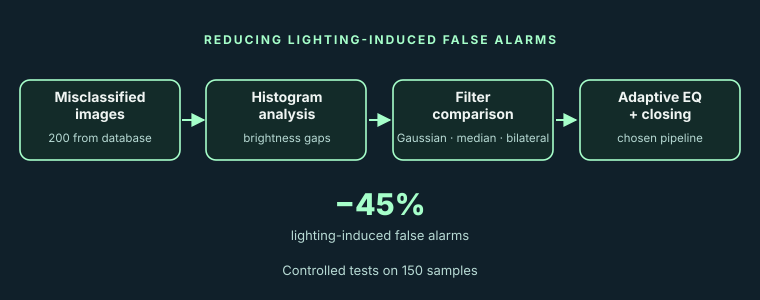

Challenge
A newly deployed automated inspection system flagged good insulated tool handles as defective about 30% of the time.
Industrial computer vision · Internship · Jul – Oct 2024
Finding why a new automated inspection system for insulated tool handles raised so many false alarms, and fixing the image preprocessing.

A newly deployed automated inspection system flagged good insulated tool handles as defective about 30% of the time.
Extracted and analysed 200 misclassified images, used histogram analysis to quantify brightness differences between true defects and false positives, and compared Gaussian, median and bilateral filtering in a Python/OpenCV preprocessing pipeline.
Adaptive histogram equalisation combined with morphological closing reduced lighting-induced false alarms by 45% in controlled tests on 150 samples.

Credits: Internship project. Company images and code are confidential and are not published.